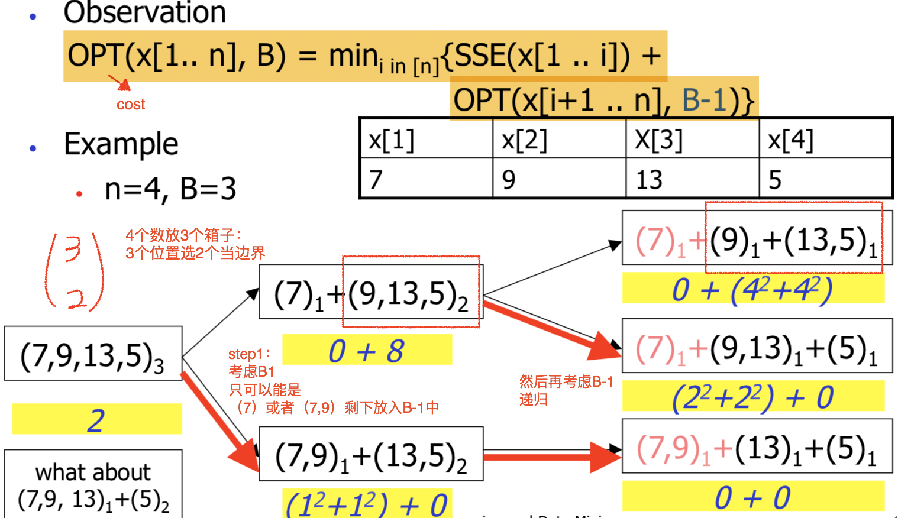
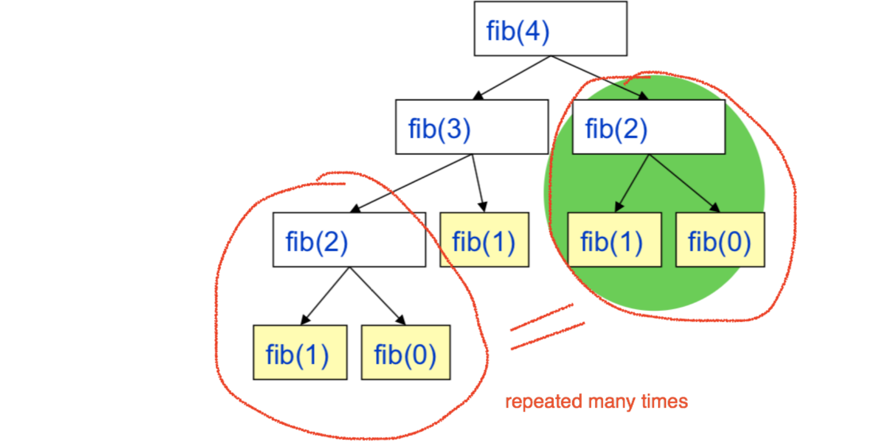
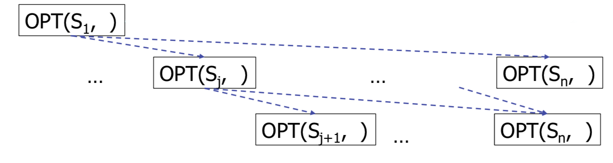
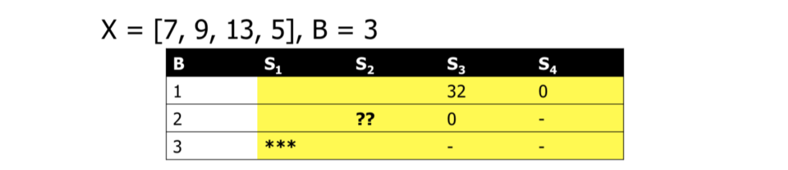
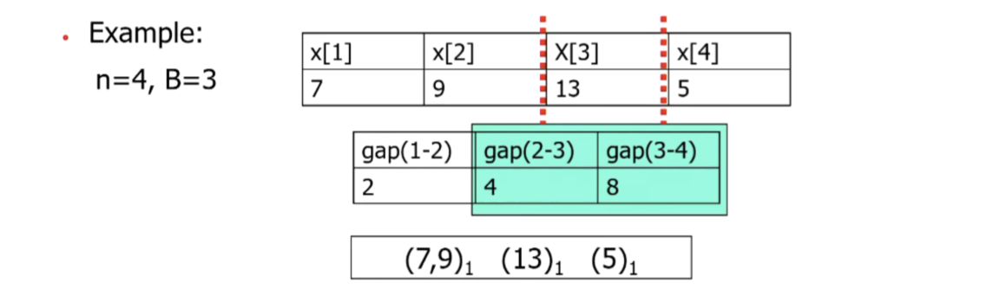
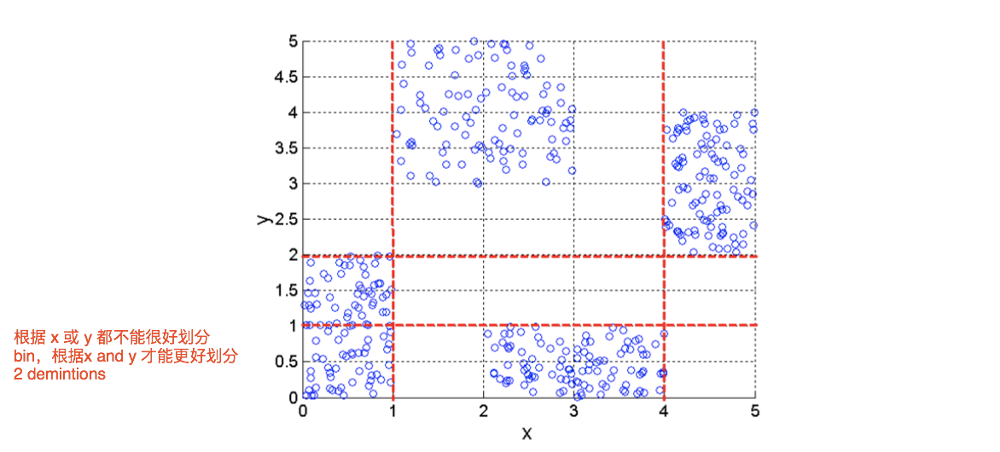
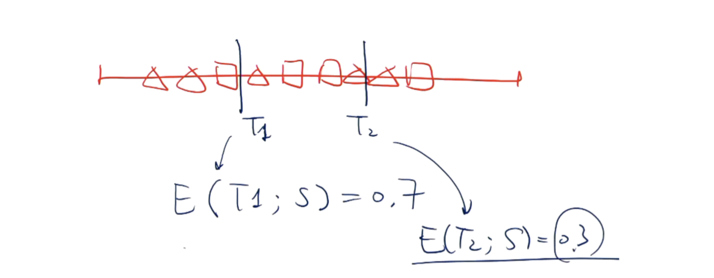

本周主要内容：
- Data cleaning
- Data integration
- Data transformation
- Data reduction
- Data discretization (离散化)
- Data type conversion
Why Data Preprocessing?
Data is the real world is dirty
- incomplete: lacking attribute values, lacking certain attributes of interest, or containing only aggregate data.
- E.g.,occupation=""
- noisy: containing errors or outliers.
- E.g.,e.g., Salary="-10"
- inconsistent（不一致）: containing discrepancies(差异) in codes or names
- E.g., Age=“42” Birthday=“03/07/1997”（Functional dependency violation）
- E.g., Was rating “1,2,3”, now rating “A, B, C”
- E.g., discrepancy between duplicate records
Why Is Data Dirty?
- Incomplete data comes from
- n/a data value when collected
- different consideration between the time when the data was collected and when it is analyzed
- human/hardware/software problems
- Noisy data comes from the process of data
- collection
- entry
- transmission
- Inconsistent data comes from
- Different data sources
- Functional dependency violation 函数依赖冲突
Why Is Data Preprocessing Important?
- No quality data, no quality mining results!
- Quality decisions must be based on quality data
- E.g., duplicate or missing data may cause incorrect or even misleading statistics.
- Data warehouse needs consistent integration of quality data
- Quality decisions must be based on quality data
- Data extraction, cleaning, and transformation comprises the majority of the work of building a data warehouse. — Bill Inmon
- Also a critical step for data mining.
Data cleaning
Data cleaning tasks:
- Fill in missing values <—— “incomplete”
- Identify outliers and smooth out noisy data <—— “noisy”
- Correct inconsistent data <—— “inconsistent”
- Resolve redundancy caused by data integration
Missing Data
- Data is not always available
- E.g., Many tuples have no recorded value for several attributes, such as customer income in sales data
- Missing data may be due to
- equipment malfunction(机器故障)
- inconsistent with other recorded data and thus deleted.(Functional dependency violation)
- data not entered due to misunderstanding
- certain data may not be considered important at the time of entry
- not register history or changes of the data
- Missing data may need to be inferred(推测).
- Many algorithms need a value for all attributes
- Tuples with missing values may have different true values
How to Handle Missing Data?
- Ignore the tuple: usually done when class label is missing
- Fill in the missing value manually. 一般情况下，费时费力，不可行
- Fill in it automatically with
- a global constant: E.g., “unknown”, ∞. 数据挖掘程序可能误以为是new class，所以也推荐这么做
- the attribute mean
- the attribute mean for all samples belonging to the same class. – Smarter
- E.g., The salary number of a student is missing, it is more reasonable to use the mean salary of all students instead of all the people to fill in.
- the most probable value: inference-based such as Bayesian formula or decision tree 利用机器学习理论来科学推断缺省值
Noisy Data
- Noise: random error or variance in a measured variable
- Incorrect attribute values may due to
- faulty data collection instruments
- data entry problems
- data transmission problems
- technology limitation
- inconsistency in naming convention
- Other data problems which requires data cleaning
- duplicate records
- incomplete data
- inconsistent data
How to Handle Noisy Data?
- Binning method: 通过考察”邻居“来平滑存储数据的值
- first sort data and partition into(equi-depth) bins
- then one can smooth by bin means, median, and boundaries, etc.
- Clustering（聚类）:将相似的值组织成群，在聚类集合之外的就是outliers
- detect and remove outliers
- Combined computer and human inspection
- detect suspicious values and check by human(E.g., deal with possible outliers)
- Regression (回归)
- Smooth by fitting the data into regression functions
Data integration
-
Data integration:
combines data from multiple sources into a coherent store -
Schema integration
- integrate metadata from different sources
- Entity identification problem. E.g., A.cust-id ≡ B.cust-#
针对RDBMS同种数据可能采用不同命名方式，通过correlation analysis来对不同schema的相类似的table部分进行检测，来确定是否为相同的数据。
E.g., different forms
- Datasource1:
Book(bid, title, isbn)
Author(aid, fname, lname, birthdate) n Writes(bid, aid, order) - Datasource2:
Book(isbn, title, year, author1, author2, …,
author10) - Datasource3:
Author(name, bornInYear, description, book1, book2, …, book5)
Handling Redundancy in Data Integration
- Redundant data occur often when integration of multiple databases
- The same attribute may have different names in different databases
- One attribute may be a “derived” attribute in another table. E.g., annual revenue
- Redundant data may be able to be detected by correlational(相关的) analysis
E.g., age and income - Careful integration of the data from multiple sources may help reduce/avoid redundancies and inconsistencies and improve mining speed and quality
Data Transformation
- Smoothing: remove noise from data
- Aggregation: summarization, data cube construction
- Generalizaiton: concept hierarchy climbing
- Normalization: scaled to fall within a small, specified range 将数据按比例缩放，使之落入一个小的特定区间
- min-max normalizaiton
- z-score normalization
- normalizaiton by decimal scaling
- Attribute/feature construction
- New attributes constructed from the given ones
Data Reduction
Data reduction:
Obtain a reduced representation of the data set that is much smaller in volume but yet produce the same (or almost the same) analytical results
Data Reduction Strategies
- Dimensionality reduction—remove unimportant attributes
- Data Compression
- Numerosity reduction—fit data into models
- Discretization and concept hierarchy generation
Dimensionality reduction
Goal: Reduce dimensionality of the data, yet sill maintain the meaningfulness of the data.
- Dimensionality reduction methods:
- Feature selection: choose a subset of the features
- Feature extraction: create new features by combining new ones
略 slides27-38 Feature selection and reductio e.g., PCA, Random Projection, t-SNE
Conversion of data types
- Three types of simple attributes:
- Nominal/categorical — values from an unordered set
E.g.,Profession: clerk, driver, teacher, … - Ordinal — values from an ordered set
E.g., WAM: HD, D, CR, PASS, FAIL - Continuous — real numbers, including Boolean values
- Nominal/categorical — values from an unordered set
- Other types:
- Array
- String
- Objects
Here we focus on:
- Continuous values -> discrete values
- Removes noise
- Some ML methods only work with discrete valued features
- Reduce the number of distinct values on features, which may
improve the performance of some ML models - Reduce data size
- Discrete values -> continuous values
- Smooth the distribution
- Reconstruct probability density distribution from samples, which helps generalization
Discretization
-
Discretization:
Reduce the number of values for a given continuous attribute by dividing the range of the attribute into intervals. Interval labels can then be used to replace actual data values. -
Methods:
- Binning/Histogram analysis
- Clustering analysis
- Entropy-based discretization
Binning
- Equal-width(distance) partitioning
- Divides the range into N intervals of equal size
- if A and B are the lowest and highest values of the attribute, the width of intervals will be: W = (B - A) / N
- The most straightforward, but outliers may dominate presentation
E.g., A=0, B=100, 99.9%的数据都在0-20，这样20-100的bin中都没有数据 - Skewed data is not handled well
- Equal-depth(frequency) partitioning
- Divides the range into N intervals, each containing approximately same number of samples
- Good data scaling
- Managing categorical attributes can be tricky.
- For ML models and statistics models, every model is wrong, but some models are useful.
- Each model has a different model bias and shows a specific view of data.
Optimal Binning Problems
- After binning, the educated guess or the smoothed value is E(xi), where xi are all the values in the same bin.
- SSE = sum of squared errors 差值的平方和
E.g., [1,3,8] avg(1,3,8) = 4,then SSE = (4-1)^2 + (4-3)^2 + (4-8)^2
-
cost of B bins = sum(cost(bin1),…, cost(binb))
-
Problem: find the B-1 bin boundaries such that the cost of the resulting bins is minimized
- Alg( {x1, …, xn}, B )
- Optimal Binning: Solve the problem optimally in
O(B* n2) time and O(n2) space. - MaxDiff: Solve the problem heuristically(启发式地) in O(n*log(n)) time and O(n) space.
- Note: both algorithms do not sort input data n Send in sorted({x1, …, xn}) if necessary
Recursive Formulation

Optimal Histogram code on github
Problem: For this recursive solution, it is not efficient for large scale of data.
-
Problem Caused by Overlapping Sub-problems
Consider of calculating Fibonacci function- fib(0) = 0
- fib(1) = 1
- fib(n) = fib(n-1) + fib(n-2), for n > 1

-
Solution 1: Trade space for time
Remember solutions of all the sub-problems
Obvious, it is not necessary.
Dynamic Programming
- Solution 2: Dynamic Programming
- Ensure all needed recursive calls are already computed
and memorized -> good schedule of computation
E.g.,用f(0)和f(1)算完f(2)之后，f(0)和f(1)就可以删了 - reused space to store previous recursive call results
We need to make sure all the sub-problems has been calculated and stored
S： S3 means suffix of XXX starts at position 3
E.g., [1,2,3,4,5,6], S3:[3,4,5,6]

Complexity
E.g.,There are O(nB) cells in table, and each cell need O(n) calculations. So, the overall complexity of the DP algorithm is O(n^2 * B) running time!

- Ensure all needed recursive calls are already computed
MaxDiff
- Solution 3: MaxDiff
- use the top-(B - 1) max “gaps” in the data as the bin/bucket boundary

(n - 1) location -> candidate cut
这个算法比较常用，因为只遍历一次算gap，然后排序，cost基本就是排序的cost，一般是O(n*logn),可能更少
- use the top-(B - 1) max “gaps” in the data as the bin/bucket boundary
Discretization via Clustering
- we can consider multiple attributes together, but typically NP-hard to find optimal solutions.
E.g., an example where univariate discretization does not work well

Supervised Discretization Methods
- In supervised learning, the output datasets are provided which are used to train the machine and get the desired outputs whereas in unsupervised learning no datasets are provided, instead the data is clustered into different classes.
- Supervised methods usually works well.
Entropy(熵) measures uncertainty
Entropy measures how random(chaos) the system is.
-
Consider drawing a random sample from S:
- If Ent(S) = 0: there is little uncertainty. E.g., 100 balls, all white
- If Ent(S) = log(m): there is much uncertainty. E.g., 100 balls, 50 black and 50 white
-
Entropy After Splitting
- E.g., S 100 balls: B 70, W 30
subset: S1: 72 balls (B 69, W3); S2: 28 balls (B 1, W 27)
S1中拿到黑球的概率非常大,S2拿到白球概率非常大 - After splitting, the uncertainty in each subset is decrease.
E.g., we can want to put these square and triangle into 2 bins.
we will choose T2, cause the uncertainty is less.

- E.g., S 100 balls: B 70, W 30
Discrete values -> continuous values
- After repeating the experiments(e.g.,measuring customers arriving 3-4pm), we observed the following random variable xi (e.g., #customers):
- xi =2,3,3,3,3,1,5
- What’s the probability to see x = 3 in a new
experiment? What about x = 4?
- Naive estimation
- P(x=3) = 4 / 7
- P(x=4) = 0 / 7 Make no sense!
x, P-chart not very smooth
- Assume x follows the Poisson distribution（松柏分布）<—— global model
- MLE estimation of
choose the most likely λ - MAP estimation with a prior (typically Gamma)
naive bayes 还会讲这两个模型
- MLE estimation of
KDE
- Kernel density estimation(KDE)
- Let {xi} i=1:n be n i.i.d. sample of an unknown
- We can estimate f(x) as
- K(z) controls the weight given to f(xi) to influence f(x), may think K(x, xi) as measuring their similarity
- h is the bandwidth parameter we need to choose